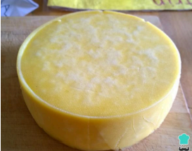

Ingredientes:
- 5 litros de leite integral ou de gado
- 45g de sal
- 5 ml de coalho líquido
- ½ copo de água morna
Modo de Preparo:
- Coloque todo o leite numa panela grande e leve ao fogo. Deixe até atingir a
temperatura de 35°C, o que deve levar cerca de 10 minutos. Quando isso
acontecer, retire a panela do fogo.
- O melhor é usar um termômetro apropriado para medir a temperatura no leite.
No entanto, você saberá que ele está nessa temperatura quando você mergulhar
um dos seus dedos no leite e conseguir contar 10 segundos sem sentir queimando.
- Em meio copo de água morna dissolva 5 ml de coalho líquido e 1 colher de chá de
sal. Adicione no leite, misture e reserve por 40 minutos - durante esse tempo o leite
vai ficar espesso.
- Poderá usar a própria tampa do coalho para medir, ela contém 5 ml de coalho
líquido.
- Após o tempo de repouso, corte essa massa de leite em cubos, como na foto,
fazendo cortes no sentido horizontal e vertical. Leve a panela de volta ao fogo, desta
vez até atingir 43° C. Retire do fogo e continue mexendo por mais 15 minutos, para
que esfrie.
- Dica: Com a ajuda da espumadeira mexa o preparado para não queimar o fundo da
panela.
- Coe essa massa de leite com a ajuda de uma peneira grande e resistente, deixando
na massa apenas algum (pouco) líquido (chamado soro de leite). Acrescente o sal
restante e misture com as mãos. Enrole a massa em um pano e coloque-a, ainda
enrolada no pano, em uma forma com furos para queijo ou peneira grande, para
escorrer o restante do líquido.
- Dica: Use, de preferência, um pano de linho ou um pano de musselina limpo, seco e
sem odores (nem mesmo de detergente ou amaciante).
- Amasse bem o pano e coloque uma prensa ou um peso de cerca de 5 kg sobre a
massa,apertando bem, para escorrer o máximo de líquido. Reserve desse jeito por 2
horas em temperatura ambiente ou na geladeira, virando a massa a cada 30
minutos.
- Dica: Em cada virada utilize uma tábua, para facilitar virar o queijo e deixá-lo reto.
- Por fim, transfira o queijo para outro pano e embrulhe bem. Reserve na geladeira
por 1 semana antes de cortar ou servir, para completar o processo de maturação e
obter um queijo colonial curado caseiro com casca durinha.
- Dica: Durante esse tempo poderá virar o seu queijo a cada 12 horas, para facilitar o
processo de maturação.
Resultado Final:

Imagem ilustrativa do Queijo Colonial após o preparo.